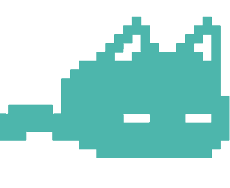

~/About_Me
I’m Ami, a Cybersecurity student at WGU. Background in IT support and project management. I practice through CTFs, focusing on threat analysis and system hardening.
Through my certifications, I've built a solid technical skill set and a strategic understanding of IT service management. I am now channeling this diverse background into cybersecurity and actively seeking opportunities to apply my skills in a real-world setting.
./Skills
Security Concepts
- Network Security & Segmentation
- Vulnerability Assessment
- Threat Intelligence & Analysis
- Incident Response Principles
Tools & Technologies
- Wireshark
- Nmap
- Linux/Unix Environments
- Virtualization (VMware, VirtualBox)
./Certifications
- CompTIA A+
- CompTIA Project+
- ITIL® 4 Foundation
- Google IT Support
./Projects
Honeypot Deployment & Analysis
Deployed a Cowrie honeypot on a cloud VPS to capture and analyze automated SSH and Telnet attacks, focusing on attacker TTPs and captured malware payloads.
 View Lab on GitHub →Home Lab Network Segmentation
Designed and implemented a segmented home network using VLANs to isolate IoT devices, a personal server, and guest access, enhancing security and network management.
View Lab on GitHub →Threat Analysis Report
Conducted an in-depth analysis of the Log4j vulnerability, detailing its mechanism, potential impact, and mitigation strategies for different environments.
View Report on GitHub →./Contact
Let's connect and build a more secure future together.